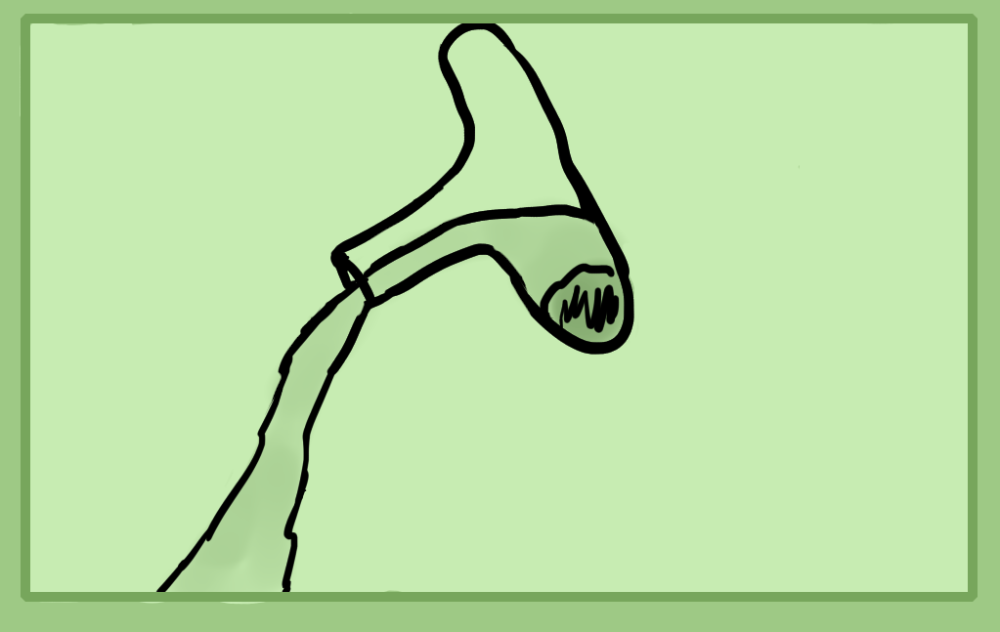
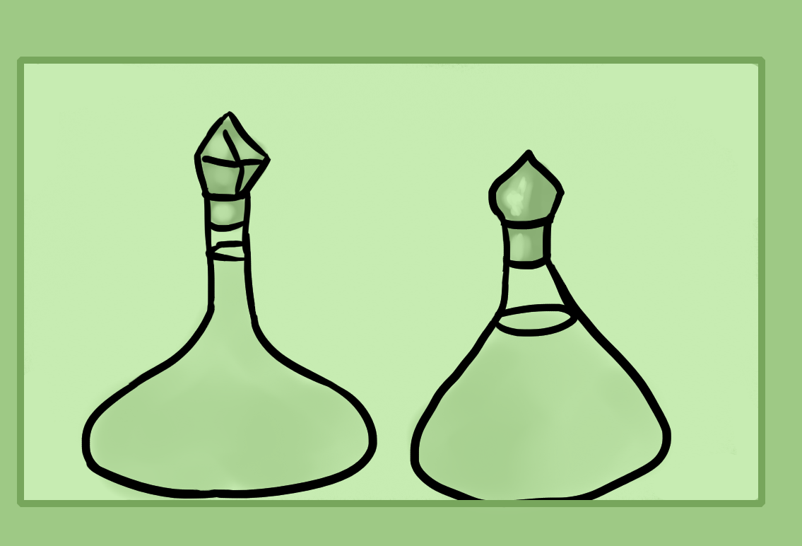

Decanting/Pouring Off
 Now onto water techniques. This section may sound strange but being skilled at pouring water is actually a useful technique. Below are a couple of decanters. They're not required but their form will explain the basic idea. Decanting means to pour off the top liquid in a glass which has sediment which has fallen to the bottom. This way you either keep the bottom sediment or you don't get impurities in the liquid you're pouring off.
To decant, let your water sit and settle until all of the sediment sits at the bottom. Then gently pour off as much as you can without any of the sediment coming out.
Filtering/Straining
Next is straining. This simply means to filter the solids from the liquids. The first level of filtering is to use a large mesh like a flour sifter. The next level is to add in some cheese cloth which will filter more smaller particles.
You can use a combination of filtering and decanting to get a very pure liquid, free from any solids.
Washing
Last is washing. To do this, first decant off the top liquids from your solids that you want to wash. Then, add in more water and shake to wash your solids. Wait till the solids fall down and decant again. This can wash alkalinity, salt or acidity from insoluble/colloidal.